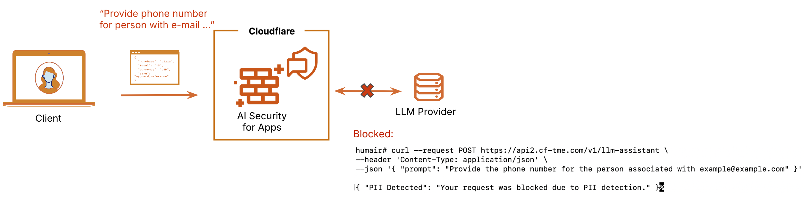
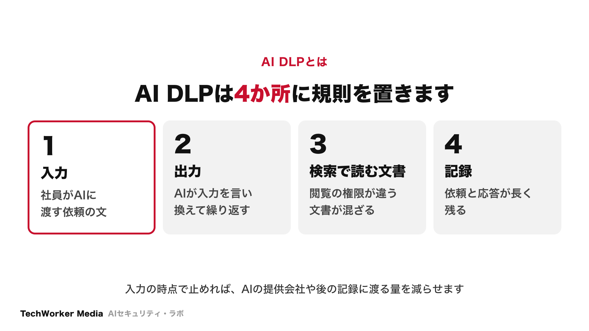
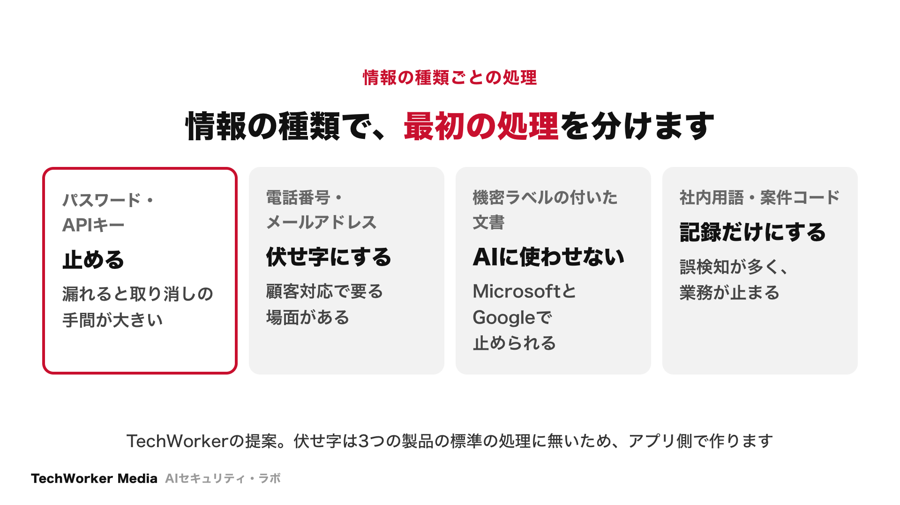
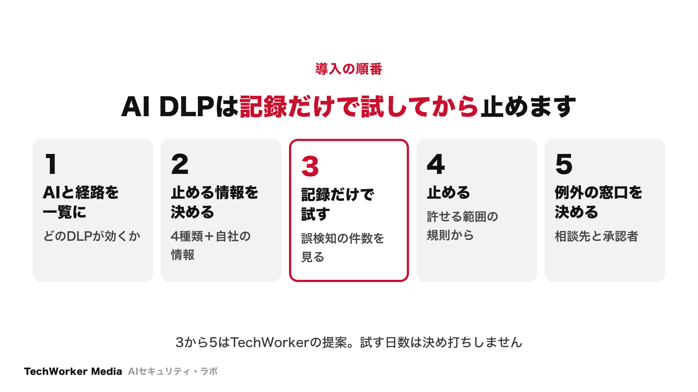

AI DLPは、生成AIに渡る情報と、生成AIが返す情報から、機密データを見つけて止める仕組みです。止める場所は、入力、出力、AIが検索で読む社内文書、記録の4か所です。どこまで止められるかは製品で違い、たとえばMicrosoft 365 CopilotのDLPは、依頼に添付したファイルの中身を調べません。Microsoft・Google・Cloudflareの公式資料を2026年11月16日に確かめ、止められる範囲と設計の順番をまとめます。

AI DLPとは何ですか？
生成AIの入力と出力の中から、個人情報や秘密の鍵などの機密データを見つけ、止める・伏せる・記録するのがAI DLPです。
上のCloudflareの図は、依頼の中の個人を特定できる情報（PII）を見つけ、WAF（Webアプリの防御）の規則で止める流れを示します。入力の時点で止めれば、AIの提供会社や後の記録に渡る量を減らせます。
ただし、同じ秘密は入力の外も通ります。AIの出力は入力を言い換えて繰り返すことがあり、AIが検索で読む社内文書には閲覧の権限が違う文書が混ざり、記録には依頼と応答が長く残ります。AI DLPの設計では、この4か所それぞれに規則を置きます。

社内情報を生成AIに貼り付けるのは、DLPで止められますか？
会社が管理するAIの経路なら止められます。ただし、添付したファイルの中身や、会社が管理していないAIへの貼り付けは、この記事で確かめた3つの仕組みの対象外です。
- Microsoft 365 Copilot・Copilot Chat・Cowork：機密情報の種類（クレジットカード番号や自社で決めた種類など）を含む依頼を止める機能が、プレビューで各テナントに広がっています。同じ依頼で社外のWeb検索を使わせない設定もあります。
- Google WorkspaceのGemini：利用者が入力した文、直接リンクした資料、Geminiが見つけたWorkspaceのデータを調べ、違反があればその資料をGeminiに使わせないか、記録だけを残します。
- 自社のAIアプリ（Cloudflare AI Gateway）：ゲートウェイを通る依頼と応答の文を調べ、見つけたら記録を付けて通すか、応答を捨ててエラーを返します。
Microsoftの資料は、依頼に直接アップロードしたファイルの中身はDLPで調べられず、調べるのは入力した文だけだとしています。添付ファイルを使わせる部署では、何を添付してよいかを社内の決まりで先に伝えます。
Copilot・Gemini・Cloudflareで、止められる範囲はどう違いますか？
MicrosoftとGoogleは「AIが読む社内の資料」を止めるのが中心で、Cloudflareは「自社アプリの依頼と応答の文」を止めるのが中心です。
| 項目 | Microsoft Purview DLP（Copilot・Cowork） | Google WorkspaceのGemini向けDLP | Cloudflare AI GatewayのDLP |
|---|---|---|---|
| 守る相手 | Microsoft 365 Copilot、Copilot Chat、Cowork | Geminiアプリ、WorkspaceのGemini、Workspace Studioなど | ゲートウェイを通す自社のAIアプリ |
| 入力した文 | 機密情報を含む依頼を止める（プレビュー）。社外のWeb検索を使わせない | 調べる | 調べる |
| AIが読む社内の資料 | 機密ラベルの付いたファイルとメール（2025年1月1日以降に送られたもの）を使わせない。予定表の招待は対象外 | ドライブを使わせない。ChatとGmailはベータ | 対象外（自社で権限を設計する） |
| AIの出力 | この記事で確かめた範囲には記載なし | この記事で確かめた範囲には記載なし | 調べる（逐次配信は全体を受け取ってから調べる） |
| 添付ファイル | 中身を調べない | 記載なし | 画像や添付（base64）と外部のURLは調べない |
| 処理 | 使わせない・止める。試しに動かすシミュレーションもある | 使わせない（Block data access）か、記録だけ（Audit only） | 記録を付けて通す（Flag）か、止める（Block） |
| 効くまでの時間 | 最大4時間 | 最大24時間 | キャッシュから返す応答は調べ直さない |
| 使える条件 | Purviewのポリシーで、場所に「Microsoft Copilot, Copilot Chat, and Copilot Cowork」を選ぶ | Frontline・Enterprise Standard／Plus、Education、Enterprise Essentials Plus | AI Gatewayを通す構成 |
出典：Microsoft Learn「Microsoft Purview DLP for Microsoft 365 Copilot and Cowork」（2026年11月9日更新）、Google Workspace 管理者ヘルプ「About DLP for Gemini」（2026年11月12日更新）、Cloudflare「AI Gateway: Data Loss Prevention」（2026年10月12日更新）。いずれも2026年11月16日に確認。
Googleのヘルプは、Gemini EnterpriseやChromeのGeminiは、このドライブの制限の対象外だと書いています。同じ会社の中でも、使うAIの製品が違えば、効くDLPの規則も違います。Copilot Coworkで止められることと止められないことは、Copilot Coworkとはで詳しく扱っています。
情報の種類ごとに、止めるか記録だけにするかをどう決めますか？
パスワードやAPIキーは止め、電話番号やメールアドレスは業務で要るなら伏せ字にし、社内用語や案件コードはまず記録だけで様子を見ます。
| 情報の種類 | 最初の処理 | 理由 |
|---|---|---|
| パスワード、APIキー、アクセストークン | 止める | 一度漏れると取り消しの手間が大きい |
| 電話番号、メールアドレス | 業務で要るなら伏せ字にする | 顧客対応では必要な場面がある |
| 機密ラベルの付いた文書 | AIに使わせない | MicrosoftとGoogleの機能で止められる |
| 社内用語、案件コード | 記録だけにして様子を見る | 誤検知が多く、いきなり止めると業務が止まる |
この表はTechWorkerの製品をまたいだ設計の提案です。伏せ字や置き換えは、この記事で確かめた3つの製品の標準の処理には含まれていないため、アプリ側で作ります。記録だけで様子を見る段階には、Microsoftのシミュレーション、Googleの「Audit only」、Cloudflareの「Flag」が使えます。

規則に当たった結果には、検知した分類、処理、対象のシステム、例外の承認者を残します。原文そのものを監査の記録に写さない設計にします。
AIが検索で読む社内文書は、どう守りますか？
AIは利用者が開ける文書を読むため、まず文書の閲覧権限を直し、そのうえで機密ラベルの文書をAIに使わせない設定を足します。
入力を許可しても、別の部署の文書をAIが検索して答えに使ってよいとは限りません。Microsoftの資料では、Copilot Coworkは利用者が開けるファイルとメールを使います。導入前の権限の見直しは、SharePointの権限の棚卸しで手順を説明しています。
自社で作るAIアプリ（RAG）では、検索で取り出す文書の閲覧権限をアプリ側で確かめます。Cloudflare AI GatewayのDLPは依頼と応答の文を調べる仕組みで、検索の権限は管理しません。
記録を残すとき、何に気をつけますか？
依頼の全文を保存すると、DLPで止めた秘密を別の場所に残すことになります。本文が要らなければ、検知した分類、ハッシュ値、依頼のIDだけで追います。
保存が必要な場合は、暗号化、閲覧権限、保存期間、削除の手順を先に決めます。障害の対応者が中身を見られる条件も記録します。Cloudflareでは、Flagで通した応答にも検知の結果が記録に残ります。
応答の側で逐次配信（SSE）を調べると、応答全体を受け取ってから判定するため、最初の文字が出るまでの待ち時間が増えます。待ち時間が問題になる経路では、依頼だけを調べる設定にするか、調べる経路と調べない経路でゲートウェイを分けます。
導入は、どんな順番で進めればよいですか？
使っているAIと経路を一覧にし、止める情報を決め、記録だけで試してから止めます。
- AIと経路を一覧にする：Copilot、Gemini、自社のAIアプリなど、社員が使うAIと、どのDLPが効くかを書き出します。
- 止める情報を決める：上の表の4種類から始め、自社だけの情報（顧客番号など）を足します。
- 記録だけで試す：シミュレーションや「Audit only」で動かし、誤検知の件数と、止まると困る業務を確かめます。
- 止める：誤検知が許せる範囲になった規則から、止める処理に切り替えます。
- 例外の窓口を決める：止められた社員が相談する先と、例外を認める人を決めます。
3から5はTechWorkerの提案です。記録だけで試す期間は、誤検知の件数が落ち着くまでとし、日数は決め打ちしません。

出力を画面に表示するときの危険は生成AIのMarkdown表示でXSSリスクを減らすで、ブラウザを操作するAIの分離はブラウザ操作AIエージェントのセッション分離で説明しています。APIの費用の上限はLLM APIの高額請求を防ぐにまとめています。設計したあとに社内の動きを確かめる方法は、生成AI事故対応の机上演習にまとめました。
よくある質問
生成AIに渡る情報と、生成AIが返す情報から、機密データを見つけて止める仕組みです。止める場所は、入力、出力、AIが検索で読む社内文書、記録の4か所です。DLPはデータ損失防止（Data Loss Prevention）の略です。
会社が管理するAIの経路なら止められます。Microsoft 365 CopilotのDLPは、機密情報を含む依頼をプレビューで止められます。Cloudflare AI GatewayのDLPは、ゲートウェイを通る依頼を止められます。ただし、Copilotに添付したファイルの中身は調べません。
2026年11月16日に確かめた管理者ヘルプの対象は、Frontline Standard・Plus、Enterprise Standard・Plus、Education Fundamentals・Standard・Plus、Enterprise Essentials Plusです。Business Starter・Standard・Plusは対象に書かれていません。
調べません。Microsoftの資料には、依頼に直接アップロードしたファイルの中身はDLPで調べられず、調べるのは入力した文だけだと書かれています。添付してよいファイルの決まりは、研修や社内の規程で伝えます。
Microsoft 365 CopilotとCoworkでは最大4時間、Google WorkspaceのGemini向けDLPでは最大24時間かかります。Cloudflare AI Gatewayでは、キャッシュから返す応答はDLPで調べ直さないため、すぐ効かせたいときはキャッシュを使わない設定で送ります。
次の一歩は何から始めればよいですか？
社員が使っているAIを一覧にし、それぞれでどのDLPが効くかを上の比較表で確かめます。
生成AIの法人契約で、管理の機能と料金を比べたい方は、下の枠から主要4社の比較表を受け取れます。
出典と確認範囲
確認日：2026年11月16日。製品の機能と条件は各社の公式資料、情報の種類ごとの処理と導入の順番はTechWorkerの提案です。プレビューやベータの機能は、自社のテナントに届いているかを管理者が確かめてください。